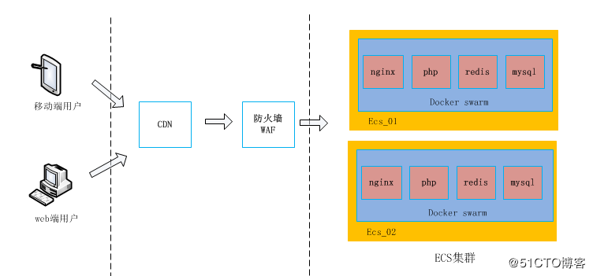

运维的苦，谁懂？一次“心惊肉跳”的迁库经历！（有彩蛋）
IT 运维工程师一直是个“苦逼”的职业，“锄禾日当午，不如运维苦，对着破电脑，一调一下午”是对运维工作的一个形象的描述。下面看看本文作者一次惊心肉跳的数据库迁移经历。
事件起源
整个事件的起源还要从我最近入职了一家区块链金融公司说起，公司业务发展比较迅猛，突破百万用户也是近在眼前。
整个系统都在阿里云上运行，每天都能看到用户的不断增长，即兴奋又担忧，为什么这么说呢？
由于我过来的时候，公司业务就已经上线了，系统接过来之后，快速了解了所有的应用服务都是在 Docker Swarm 跑起来的，也包括 MySQL 数据库。
按照这种用户量发展下去，MySQL 在容器中运行用不了多久肯定会撑不住，以至于我就有了迁库的想法。
我开始隐隐的担忧起来，毕竟不想每天提心吊胆的做运维。所以立即重新规划了新的方案和大家一起探讨。
最终总监和相关技术负责人都敲定用 RDS 做为数据库新的方案，周星驰的功夫中也说到：“天下武功，唯快不破”，于是就开始干起来。
迁移计划
原架构图

如上图所示，分析一下原来的架构图：
从入口层（CDN）→到安全层（WAF）→最后到达应用层 （ECS集群）。
Docker Swarm 打通了 ECS 集群中的每台服务器，在每台 ECS 宿主机安装 Docker engine 并部署了公司需要的应用服务和数据库（Nginx、PHP、Redis、MySQL等）。
MySQL 容器通过本文件挂载到容器中实现数据持久化。
业务项目以 PHP 为主，PHP 也是运行在容器中，通过 PHP 指定的配置文件连接到 MySQL 容器中。
随便展示一下其中一个库的 docker-compose yaml 文件：
version: "3"
services:
ussbao:
# replace username/repo:tag with your name and image details
image: 隐藏此镜像信息
deploy:
replicas: 1
restart_policy:
condition: on-failure
environment:
MYSQL_ROOT_PASSWORD: 隐藏此信息
volumes:
- "/data//mysql/db1/:/var/lib/mysql/"
- "/etc/localtime:/etc/localtime"
- "/etc/timezone:/etc/timezone"
networks:
default:
external:
name: 隐藏此信息
从上面的信息可以看出来，每个库只运行了一个 MySQL 容器，并没有主从或读写分离的方案。
而且也没有对数据库做任何优化，数据库这样跑下去让笔者很担忧，正常来说，都会把数据库独立部署运行。
调整后架构图

从上图可以看出来，笔者只是把 MySQL 独立出来了，开通 RDS 实例来跑数据库，当然还开通了其他的一些服务（比如 OSS、云 Redis 等），这些不是本文的重点，就没有画出来。
Nginx 和 PHP 服务还是在 Docker Swarm 中运行。本文只是对迁移后出了问题的库进行分享，下面来看看迁移的方案吧。
迁移流程方案
迁移流程的方案：开通 RDS 实例→备份 SQL→导入到 RDS→修改数据库配置文件→测试验证。
迁移步骤如下：
根据业务量规划开通 RDS 实例，创建数据库和用户
提前做好 RDS 白名单，添加允许访问 RDS 的 IP 地址
mysqldump 备份 Docker 中的 MySQL
把备份好的 .sql 文件导入到 RDS 中
修改 PHP 项目的数据库配置文件
清空 PHP 项目的缓存文件或目录
测试验证
RDS 定时备份
具体迁移细节就不展示了，我是在夜深人静的时候进行迁移操作的，确定大半夜没人访问我们的 App 和网站了才开干的。
我们的业务情况有点像股市，我们是晚上 12 点不许操作和交易，第 2 天早上 9 点开盘，9 点钟是并发的高峰期，就像朝阳大悦城上午开门一样，大批的顾客同时并发过来了。
所以那天晚上在 12 点 15 分准时开干，按计划和提前准备的配置、命令、脚本进行操作的。
把 Docker 中运行的 MySQL 迁移到 RDS 上非常顺利，好几个库的迁移不到半个小时就结束了，并且把网站和 App 的流程都跑了一遍，也都是妥妥的。
最终把提前准备好的备份脚本放在 crontab 中定时执行，可以看下脚本内容：
#!/bin/bash
#数据库IP
dbserver='*******'
#数据库用户名
dbuser='ganbing'
#数据库密码
dbpasswd='************'
#备份数据库,多个库用空格隔开
dbname='db1 db2 db3'
#备份时间
backtime=`date +%Y%m%d%H%M`
out_time=`date +%Y%m%d%H%M%S`
#备份输出路径
backpath='/data/backup/mysql/'
logpath=''/data/backup/logs/'
echo "################## ${backtime} #############################"
echo "开始备份"
#日志记录头部
echo "" >> ${logpath}/${dbname}_back.log
echo "-------------------------------------------------" >> ${logpath}/${dbname}_back.log
echo "备份时间为${backtime},备份数据库 ${dbname} 开始" >> ${logpath}/${dbname}_back.log
#正式备份数据库
for DB in $dbname; do
source=`/usr/bin/mysqldump -h ${dbserver} -u ${dbuser} -p${dbpasswd} ${DB} > ${backpath}/${DB}-${out_time}.sql` 2>> ${backpath}/mysqlback.log;
#备份成功以下操作
if [ "$?" == 0 ];then
cd $backpath
#为节约硬盘空间，将数据库压缩
tar zcf ${DB}-${backtime}.tar.gz ${DB}-${backtime}.sql > /dev/null
#删除原始文件，只留压缩后文件
rm -f ${DB}-${backtime}.sql
#删除15天前备份，也就是只保存15天内的备份
find $backpath -name "*.tar.gz" -type f -mtime +15 -exec rm -rf {} \; > /dev/null 2>&1
echo "数据库 ${dbname} 备份成功!!" >> ${logpath}/${dbname}_back.log
else
#备份失败则进行以下操作
echo "数据库 ${dbname} 备份失败!!" >> ${logpath}/${dbname}_back.log
fi
done
echo "完成备份"
echo "################## ${backtime} #############################"
到了 1 点钟，确定没问题后发通知到群里，发微信给领导表示已迁移完成，进行很顺利，然后笔者打车回家，睡觉。
雪崩来临
其实这一晚笔者睡得也不踏实，到了 8 点半就醒了，因为我们 9 点钟开盘，会有大量的客户涌进，每天开始产生新的交易（买入和卖出），给大家看下截图：

果不其然，9 点过后，我打开 App，一切正常，点击切换几个界面后，发现其中一个功能的请求超时了，一直在转，然后紧接着其他功能也超时了。
完了，出问题了。赶紧开电脑查问题，过了一会儿群里就开始沸腾了（反映好多客户打开 App 都显示请求超时了），我的电话也第一时间响了，技术总监打来的，问我怎么回事，我说正在开电脑排查。
紧急处理
排查问题
电脑打开后，首先想到的就是 RDS 数据库出了问题，登录阿里云，进入 RDS 中的 DMS 数据管理控制台，一进去就傻眼了 “CPU 爆了”，这么多连接数，如下图：

进入会话去看看，发现会话“炸锅了”，发现几百页的 select 都挤在 ub_user_calculate 这个表中，这个表数据量相对大一些，目前有 200 多万条数据，如下图：

我的自然反应就是去查看此表的结构，但发现此表没有索引，我被惊讶到了，竟然没有索引，这......
然后笔者返回源数据库查看这张表，也发现没有索引，由此可以确定我导过来的这张表就是没有创建索引，如下图：

当数据库中出现访问表的 SQL 没创建索引，会导致全表扫描，如果表的数据量很大，扫描大量的数据，执行效率过慢，占用数据库连接，连接数堆积很快达到数据库的最大连接数设置，新的应用请求将会被拒绝导致故障发生。
解决问题
我赶紧把此事反映给开发负责人，表明问题根源找到了，会话锁死了，是由其中的一张表没有索引而导致的，问询需要给哪几个字段加索引。
然后接着操作增加索引：

点击保存后，发现创建索引的 SQL 一直卡死着，如下图所示：


突然想起来还有一堆会话在那里，先 Kill 掉所有会话吧，不然索引肯定创建不了，然后又发现会话根本杀不完，如下图：

怎么办呢？会话杀不完...没办法，先把访问入口切断吧，反正现在用户访问也超时，就毅然决定先把域名停了，访问入口给切断了，然后在增加索引。索引加上了，发现 CPU 还下不去，如下图：

为了快速让 CPU 降下去，重启这个实例吧：

实例重启完后，CPU 下去了，会话也下去了：

开启入口层的域名访问吧，再次观察现在的会话和 CPU 等况，如下图：


这就对了，会话也正常了，通知领导业务恢复。
再来看一下服务器 CPU 的情况（迁移 MySQL 后的情况），明显逐渐好转。

索引使用策略及优化
创建索引注意事项：
在经常查询而不经常增删改操作的字段加索引。
order by 与 group by 后应直接使用字段，而且字段应该是索引字段。
一个表上的索引不应该超过 6 个。
索引字段的长度固定，且长度较短。
索引字段重复不能过多，如果某个字段为主键，那么这个字段不用设为索引。
在过滤性高的字段上加索引。
使用索引注意事项：
使用 like 关键字时，前置 % 会导致索引失效。
使用 null 值会被自动从索引中排除，索引一般不会建立在有空值的列上。
使用 or 关键字时，or 左右字段如果存在一个没有索引，有索引字段也会失效。
使用 != 操作符时，将放弃使用索引。因为范围不确定，使用索引效率不高，会被引擎自动改为全表扫描。
不要在索引字段进行运算。
在使用复合索引时，最左前缀原则，查询时必须使用索引的第一个字段，否则索引失效；并且应尽量让字段顺序与索引顺序一致。
避免隐式转换，定义的数据类型与传入的数据类型保持一致。
参考链接：https://help.aliyun.com/document_detail/52274.html?spm=a2c4g.11174283.6.812.ZGPyBQ
总结
此次故障虽然是表没有索引造成的，但是我是有责任的，没有挨个表检查一下表的结构。
通过此次故障也可以看出来开发在设计表的时候真的要非常的重视，注意细节。
还有就是之前在容器中运行的 MySQL 也时不时的出现 CPU 瓶颈（比如 CPU 使用率偶尔会达到 80% 以上），我应该提前发现这些问题，彻底排查找出问题所在原因再进行迁库的操作。
福利来啦
留言分享您运维工作中最惊心动魄的“救火故事”，小编将选出留言最精彩的 10 名网友，送出《Docker从入门到实战》图书一本~活动截止时间 5 月 4 日 12 时整，特别鸣谢机械工业出版社为本次活动提供的图书赞助。

内容简介
深度剖析 Docker 的核心概念、实现原理、应用技巧和生态系统；全面涵盖 Docker 四大管理工具、三大组件、集群编排；介绍上百个实战案例，提升动手能力；以 Docker 当前的流行版本为例讲解 Swarm 集群管理。
作者：甘兵
编辑：陶家龙、孙淑娟
来源：http://blog.51cto.com/ganbing/2105842
投稿：有投稿、寻求报道意向技术人请联络 editor@51cto.com

甘兵，高级运维工程师，6 年运维工作经验。曾就职于国家互联网应急中心、天音控股等企业。拥有丰富系统运维经验，大型网络架构设计经验。热衷于开源技术的研究，关注的技术方向 Docker、DevOps 等。

精彩文章推荐：
修改于